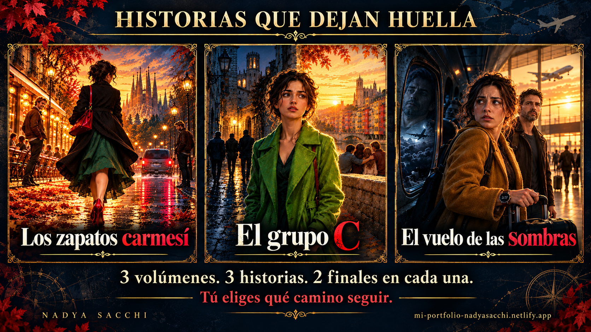
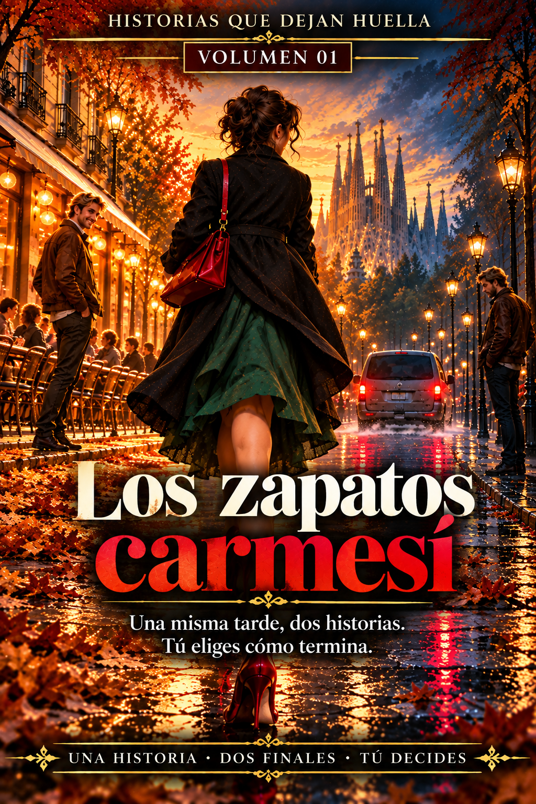
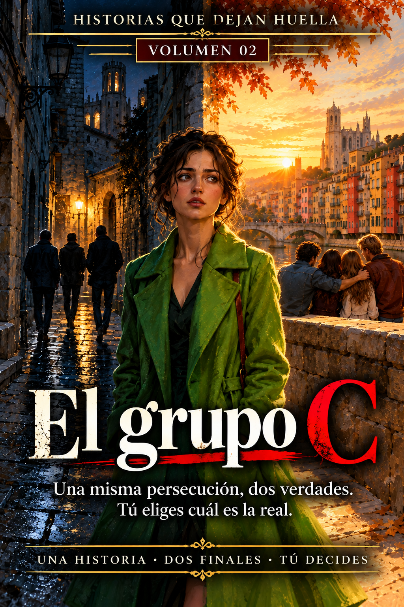
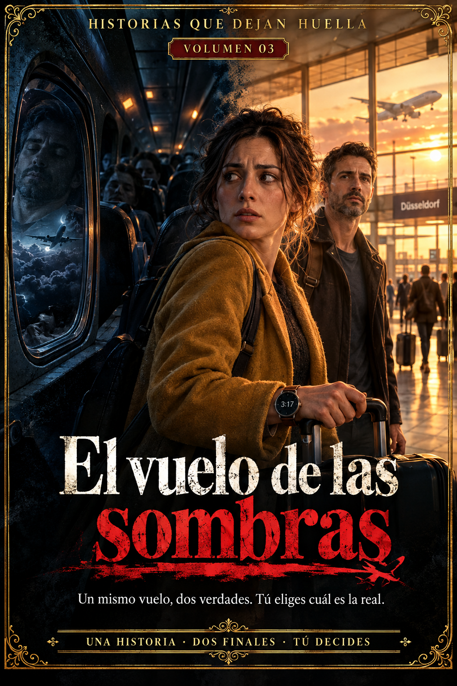
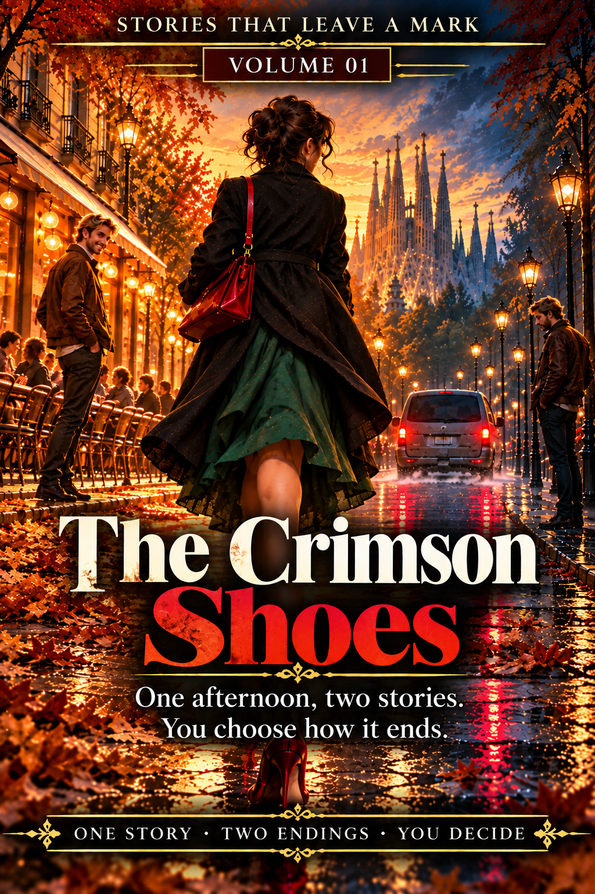
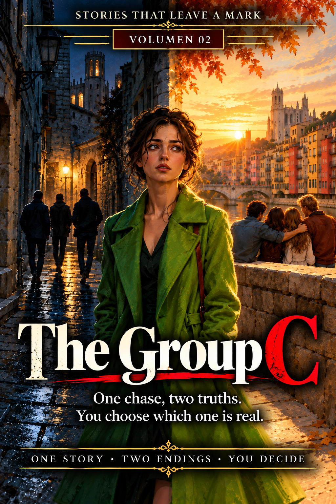

01 / FICTION
The fiction collection · Spanish & English


Stories that
stay with you.
Meet Stories That Leave a Mark: original fiction, suspense and interactive stories with two alternative endings. The reader chooses how each story ends.
Selected titles · Spanish

Los zapatos carmesí
El grupo C
El vuelo de las sombrasSelected titles · English

The Crimson Shoes
The Group CThe Shadow Flight